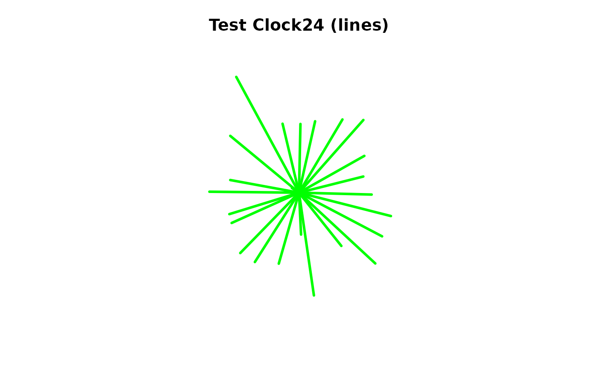
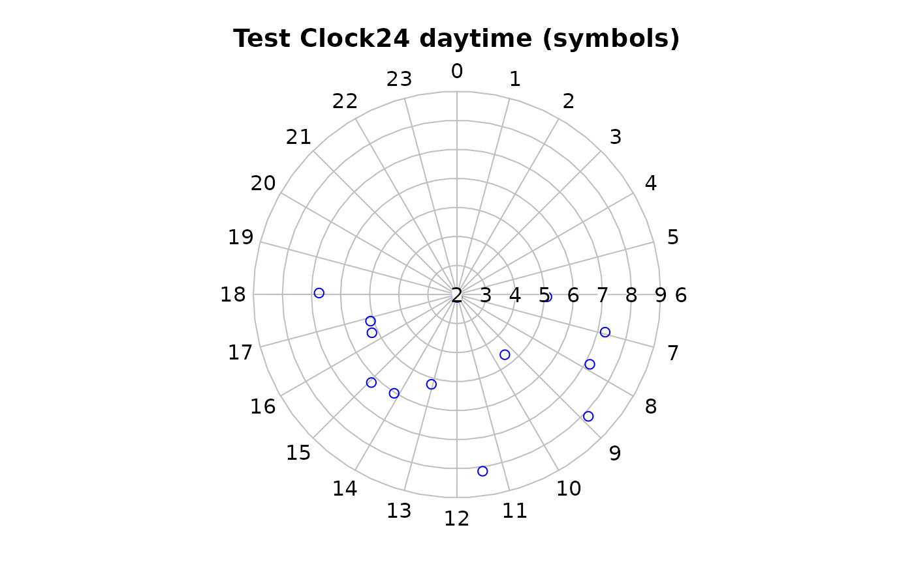

Plot values on a 24 hour "clockface"
clock24.plot.Rdclock24.plot displays a plot of radial lines, symbols or a polygon centered at the midpoint of the plot frame on a 24 hour 'clockface'. In contrast to the default behavior of radial.plot, the positions are interpreted as beginning at vertical (000) and moving clockwise.
If add=TRUE is passed as one of the additional arguments, the values will be added to the current plot. If a radial.lim argument was passed on the initial plot, it must be passed again to add values or the values will be displayed incorrectly.
Usage
clock24.plot(lengths,clock.pos,labels=0:23,minutes=FALSE,
hm2dec=FALSE,label.pos=NULL,rp.type="r",loglen=FALSE,explab=FALSE,...)Arguments
- lengths
numeric data vector. Magnitudes will be represented as line lengths, or symbol or polygon vertex positions.
- clock.pos
numeric vector of positions on the 'clockface'. These must be in decimal hours and will be rescaled to radians.
- labels
Labels to place at the circumference.
- minutes
Whether to add minutes (".00") to the labels.
- hm2dec
Whether to convert HH:MM clock positions to decimal hours.
- label.pos
Radial positions of the labels.
- rp.type
Whether to plot radial lines, symbols or a polygon.
- loglen
Whether to log transform the length values. Only base 10 logs are available.
- explab
Whether to use the default fixed (FALSE) or exponential (TRUE) notation for the radial labels.
- ...
additional arguments are passed to radial.plot and then to plot.
Value
A list of the parameters altered by radial.plot.
Examples
testlen<-rnorm(24)*2+5
testpos<-0:23+rnorm(24)/4
clock24.plot(testlen,testpos,main="Test Clock24 (lines)",show.grid=FALSE,
line.col="green",lwd=3)

if(dev.interactive()) par(ask=TRUE)
# now do a 'daylight' plot
oldpar<-clock24.plot(testlen[7:19],testpos[7:19],
main="Test Clock24 daytime (symbols)",
point.col="blue",rp.type="s",lwd=3)

# reset everything
par(oldpar)